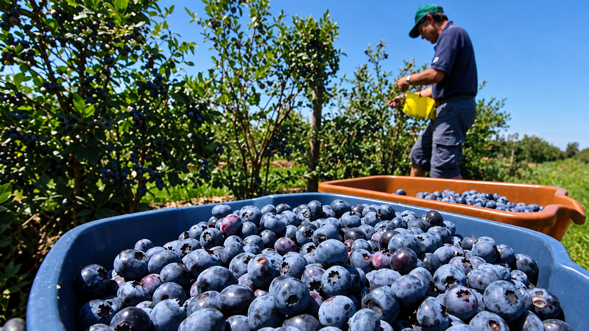

01
Registra
Ingresa tu lote y sus datos de origen, fundo, variedad y producción.
Conecta la información de tu fruta, desde su origen hasta su destino.
Descubre cómo funciona ↓
Registra, conecta y consulta la información que acompaña a cada lote.
Ingresa tu lote y sus datos de origen, fundo, variedad y producción.
Reúne calidad, packing, poscosecha, documentos y recorrido.
Explora la ficha pública del lote y comparte su historia mediante NFC.
Conecta el origen, el proceso y el destino.
Centraliza los parámetros registrados de tu fruta.
Organiza certificados y documentos asociados.
Facilita la consulta de información del lote.
NECHDATA nace como una propuesta para reunir la información de los lotes que suele encontrarse dispersa entre hojas de cálculo, etiquetas, documentos y distintos actores de la cadena.
Nuestro propósito es hacer visible, ordenada y accesible la historia de cada lote de fruta.
Cada lote tiene una historia, y nosotros buscamos hacerla visible.NECHDATA · DATOS QUE DAN VIDA